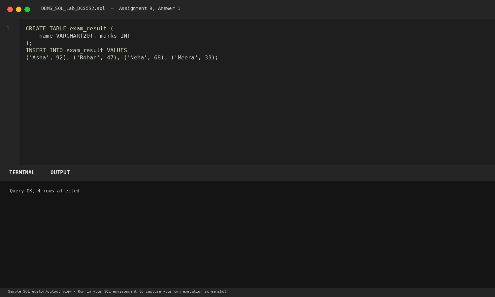
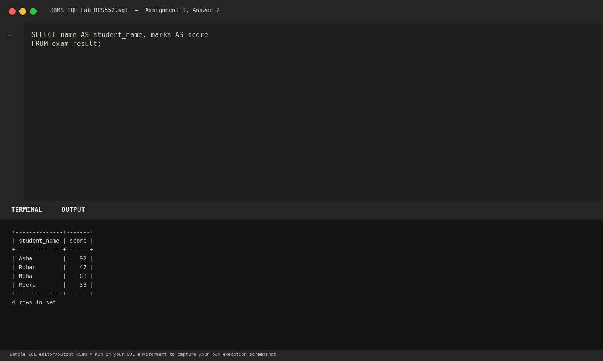
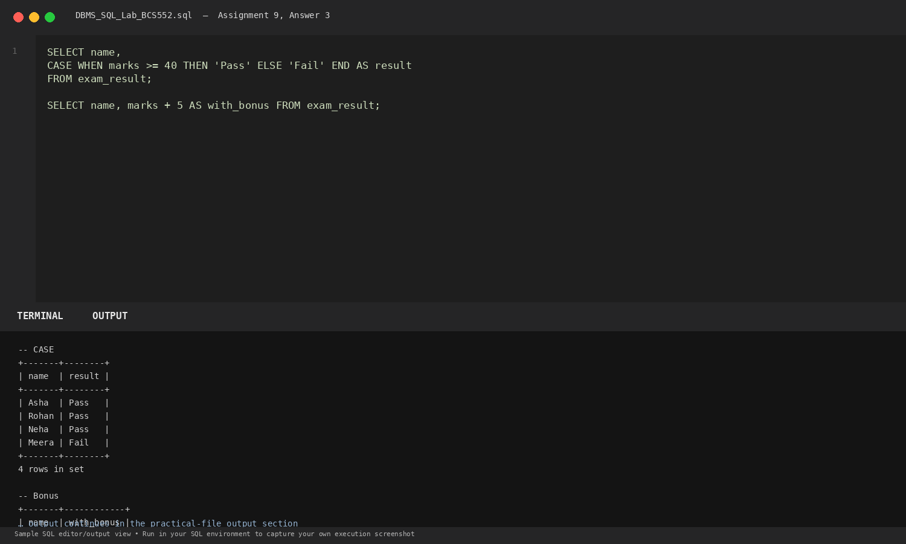

Task 1
Set up the exam_result table
SQL Query
CREATE TABLE exam_result (
name VARCHAR(20), marks INT
);
INSERT INTO exam_result VALUES
('Asha', 92), ('Rohan', 47), ('Neha', 68), ('Meera', 33);Database Output
Query OK, 4 rows affected
Explanation: Initializes student exam scores.
Terminal Screenshot Preview

Task 2
Use column aliases
SQL Query
SELECT name AS student_name, marks AS score
FROM exam_result;Database Output
+--------------+-------+ | student_name | score | +--------------+-------+ | Asha | 92 | | Rohan | 47 | | Neha | 68 | | Meera | 33 | +--------------+-------+ 4 rows in set
Explanation: Renames columns in the result set to student_name and score without modifying the underlying schema.
Terminal Screenshot Preview

Task 3
Use CASE and add bonus marks
SQL Query
SELECT name,
CASE WHEN marks >= 40 THEN 'Pass' ELSE 'Fail' END AS result
FROM exam_result;
SELECT name, marks + 5 AS with_bonus FROM exam_result;Database Output
-- CASE +-------+--------+ | name | result | +-------+--------+ | Asha | Pass | | Rohan | Pass | | Neha | Pass | | Meera | Fail | +-------+--------+ 4 rows in set -- Bonus +-------+------------+ | name | with_bonus | +-------+------------+ | Asha | 97 | | Rohan | 52 | | Neha | 73 | | Meera | 38 | +-------+------------+ 4 rows in set
Explanation: CASE evaluates conditional logic per row (marks >= 40 -> Pass, else Fail). marks + 5 computes an expression on the fly.
Terminal Screenshot Preview
